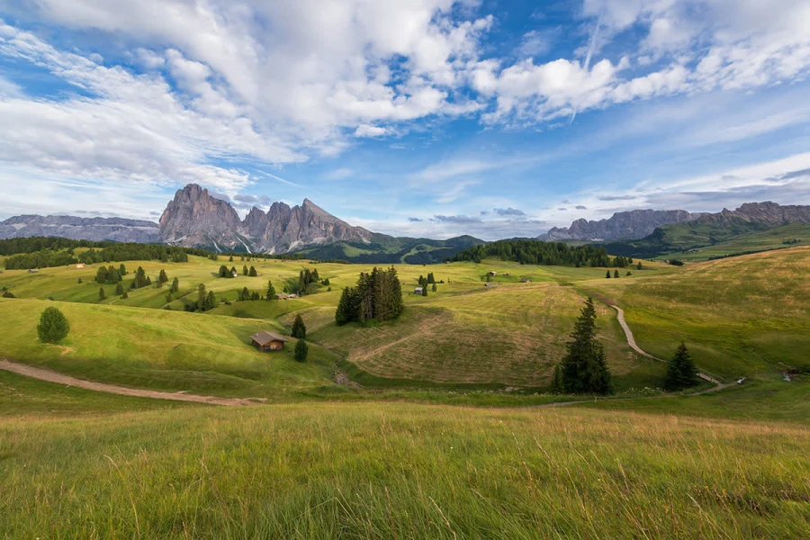

Experiment 2 - A Procedurally Generated Living Impression
Description
This project offers a generative, living impression of this inspiring image:

Technical
Relation to inspring image:
- Color: The sky, grass, tree, and stone colors were sampled from the inspiring image using the Photoshop eyedropper tool.
- Primitives: The trees are rendered with triangle primitives.
- Polygons: The background mountain is a single randomly polygon using vertex calls.
- Composition: Different random seed values lead to differently shaped mountains and differently positioned trees.
- Life: The position of trees is animated over time as if to simulate the view from a passing train and the slightly responds to the horizontal motion of the mouse cursor.
Borrowed from UCSC Prof Adam M. Smith
Reflection
As I'm going through the experimentation process for Experiment 2, I'm feeling simultaneously excited and stressed. Excited because the course material is coming together, everything is taking shape, and I can see how cool it's going to be. But also stressed because there are still a million little technical problems to solve and not enough time to solve them all. It's crunch time with the deadline of next week's start of classes looming large on the horizon. Hopefully it will all come together in time!